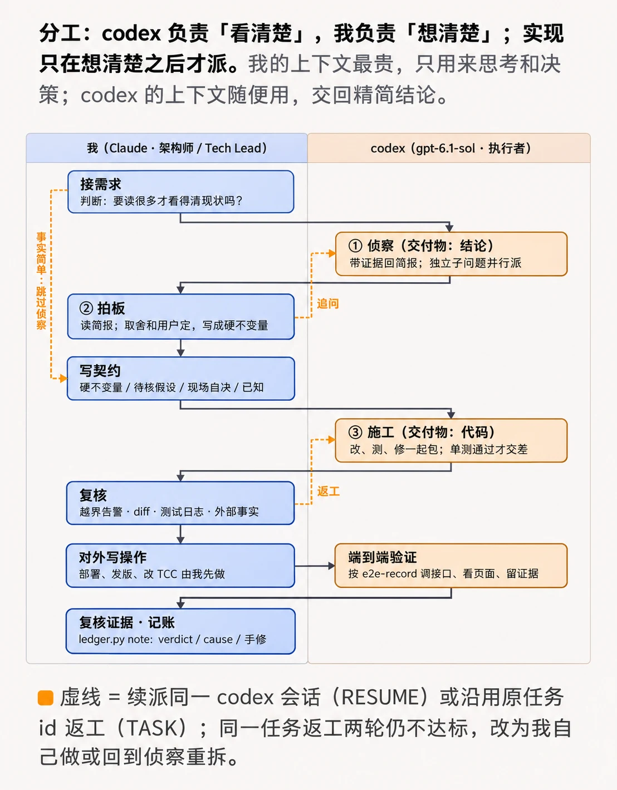

04 / AGENT WORKFLOW · 个人工程环境
日用自进化环境 · 连续 4 期追踪（W45–W47）
rstack — 把 AI 编程环境做成自进化系统
通过分工、复核和定期回看，减少 AI 编程中重复查工具和反复纠错。
↓ 55%
查
--help / 千次调用（36.4 → 16.2）
↓ 78%
权限/安全被拦 / 千次调用（3.2 → 0.7）
3 / 3
W47 补丁反事实重放验收全部通过
≤ 5 条/期
补丁逐条人拍板 · 同一任务 2 轮返工熔断
- 双 Agent 分工
- Claude（主管）拍板、写七栏契约、做对外写操作；Codex（gpt-6.1-sol）侦察、施工与 E2E
- 复盘三层节奏
- 需求级
wrapup· 周度主力weekly-retro（八步闭环）· 每 2 期元调优retro-tune - 核心组件
claude-lead+weekly-retro技能、2 枚 Claude Code hook、Python/Bash 台账与回放脚本- 设计信条
- 主上下文最贵，只用来思考决策；怪环境不怪模型，动态补丁优先于静态文档
 点击放大原图
点击放大原图
weekly-retro 八步闭环 → 动态优先沉淀环境资产。
FIG 01 // OVERVIEW
项目背景 & 业务目标
AI 编程时，主会话越长，反复读取上下文的开销越高；一次口头纠错也常在下个任务重新发生。目标是减少重复查工具和权限拦截，让经验在后续任务中发挥作用。
这是个人独立设计和维护的 AI 编程工作流与本地环境。
问题分析 & 需求挖掘
查看个人会话账单后，发现缓存读取约占等效开销的 80%，而读代码、只读查询和构建测试占据大量工作；问题不只是模型回答速度。
单次增加提示词不能保证下次生效，因此优先处理可重复出现的操作与错误，而不是不断扩大主会话。
方案设计 & 核心权衡
将决策与复核留在主会话，把大量代码调查和实施交给另一工具；每周回看会话，把重复问题变成脚本、检查或使用指引。
分工能控制主会话负担，但会引入交接成本，因此先写清范围和约束，再审核结果；对高风险操作保留人工决策，并限制反复返工。

点击放大原图RESUME）或沿用任务 ID 返工（TASK），两轮不达标立即熔断。
FIG 02 // CLAUDE-LEAD
 点击放大原图
点击放大原图
weekly-retro 八步闭环：回填旧账 → 扫会话 → 捞 5 类失败点 → 拐点四问卡 → 三层分诊 → 人拍板 → 反事实重放 → 记账。
FIG 03 // WEEKLY-RETRO
 点击放大原图
点击放大原图
落地推进 & 风险处理
从个人真实会话和工具日志中找问题，按周整理，逐项决定是否修改；对采纳的改动用新的只读会话重新验证。
早期部分人工介入指标依赖正则预标注，容易漏判，后续改为人工通读；工具错误率也必须持续观察，不能只展示改善的指标。
结果数据 + 复盘
W45 至 W47 的四期记录中，每千次工具调用查帮助的次数从 36.4 降至 16.2（约 55%），权限或安全拦截从 3.2 降至 0.7（约 78%）；W47 的 3 个回放题通过。
同期工具报错从每千次 11.2 上升至 20.2，且任务内容、统计方式有变化，不能把趋势直接归因为某一项改动。复盘的价值在于持续验证，下一步应改善报错和统计口径。
附录：安装与参考资料
目录结构、安装与日常命令速查。
bash · 一键安装技能与可选 hook
# 软链安装技能到 ~/.claude/skills 和 ~/.codex/skills（已有同名自动跳过）
bash install.sh
# 可选：幂等合并 PreToolUse 守卫与委派提醒 hook（修改前自动备份）
bash install.sh --hooks
claude-lead · 派发、续派、记账与分析
# 新派任务（后台运行等通知，不轮询）
"$DG/dispatch.sh" <workdir> <brief.md> <结论|代码> <标签>
# 续派同一 codex 会话（只写增量）
RESUME=<task_id|run目录> "$DG/dispatch.sh" - <brief.md>
# 复核记账（手修过必加 --hand-fixed）
"$DG/ledger.py" note <run目录> --verdict <pass|partial|fail|stop> \
[--cause <原因>] [--gap <契约缺口>] [--hand-fixed] --level <低|中|高> \
--task "<任务简述>" --comment "<复核结论>"
# 查看统计、效率与委派阈值回放
"$DG/ledger.py" stats --since <YYYY-MM-DD>
"$DG/timing.py" --since <YYYY-MM-DD>
weekly-retro · 扫描、查拐点与反事实重放
python3 -I "$WR/scripts/tune_due.py"
python3 -I "$WR/scripts/scan.py" --since <起点> --until <终点>
python3 -I "$WR/scripts/turn.py" '<会话标识>|<月-日 时:分>|<关键词>'
python3 -I "$WR/scripts/replay.py" --out <本期目录> --only <题号>数据与隐私边界
- 复盘报告、
metrics.jsonl与replays/*.json落在本地$RETRO_DIR（默认~/notes/retro），写回放题前先脱敏凭证。 - 派发产物落
~/.local/share/agent-delegate/runs/；hook 日志仅记规则名、决策与会话 ID，不保存命令原文。
三条实践护栏
- 每期补丁上限 5 条且逐条人拍板；只改个人环境，团队仓库规则只提建议。
- 持续做减法：零命中 3 期的 hook 删、长期 100% 通过的回放题降频、记忆定期瘦身。
- 别把我的阈值当教条，按自己的
timing.py与metrics.jsonl调校。
专有名词速查表
- rstack
- 个人本地 AI 工程环境资产仓，汇总
claude-lead、weekly-retro技能、脚本、全局约定与 hook。 - Claude / Codex（gpt-6.1-sol）
- 双 Agent 组合：前者负责判断、写契约、复核与对外写操作，后者负责侦察、施工与单测/E2E。
- claude-lead / weekly-retro / wrapup / retro-tune
- 四块协作流程，覆盖日常委派、每周五晚复盘、需求收尾与每两期一次的复盘元评估。
- dispatch.sh / ledger.py / timing.py
claude-lead配套脚本：拼装信封并后台派发、记录台账、分析派发时机与提醒阈值。- scan.py / turn.py / replay.py / tune_due.py
weekly-retro脚本：扫描会话出指标与turns.tsv、回看拐点、无头反事实重放与元评估计时。- pretool_guard.py / posttool_delegate_nudge.py
- 两枚 Claude Code hook：高风险命令拦截守卫（支持
# retro-selftest）与连续只读委派提醒。 - xapi / lane_wait
- 动作层动态补丁代表：把高频多步命令压成一条短命令，显著降低查
--help频次。 - xagent-ops-cli（ops-cli）
- 动作层静态速查技能，沉淀已验证操作写法，W47 以 351 次调用居技能榜首。
- e2e-record
- 端到端验证规范，指导 Codex 在部署后调接口、查库、看页面并留存验收证据。
- TCC
- 外部配置中心；改配置与部署发版同属高风险对外写操作，约定由主管执行。
- T3 线程 / antigravity / t3code / lark-channel
- 本机多工具线程来源与日常开发项（
t3code、lark-channel为 W47 密集开发项目）。
下一个项目 · 05 / 05
Media to Notes — 长音视频图文笔记插件 →
按笔记类型整理音视频：34 分钟课程样例配有 32 张板书截图。